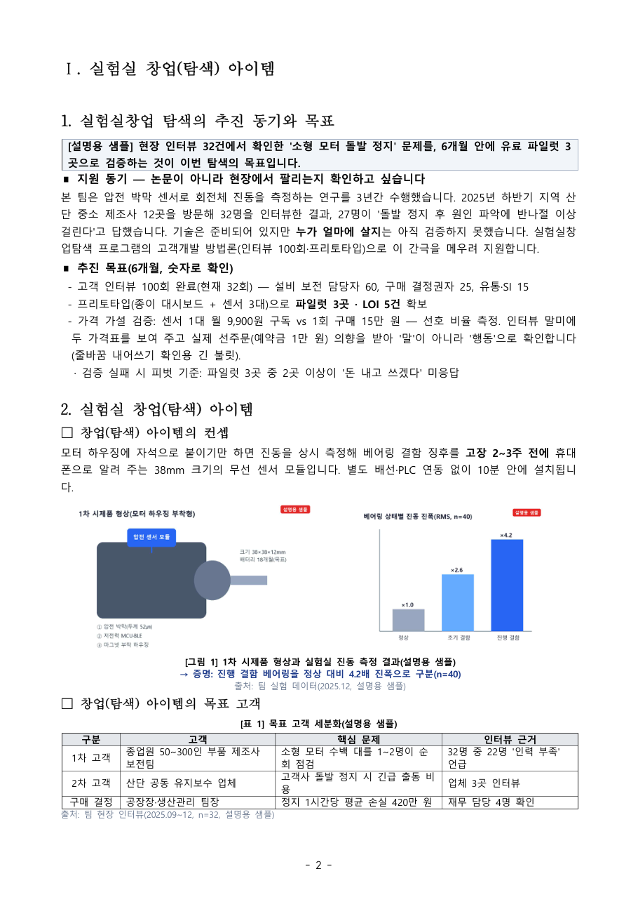
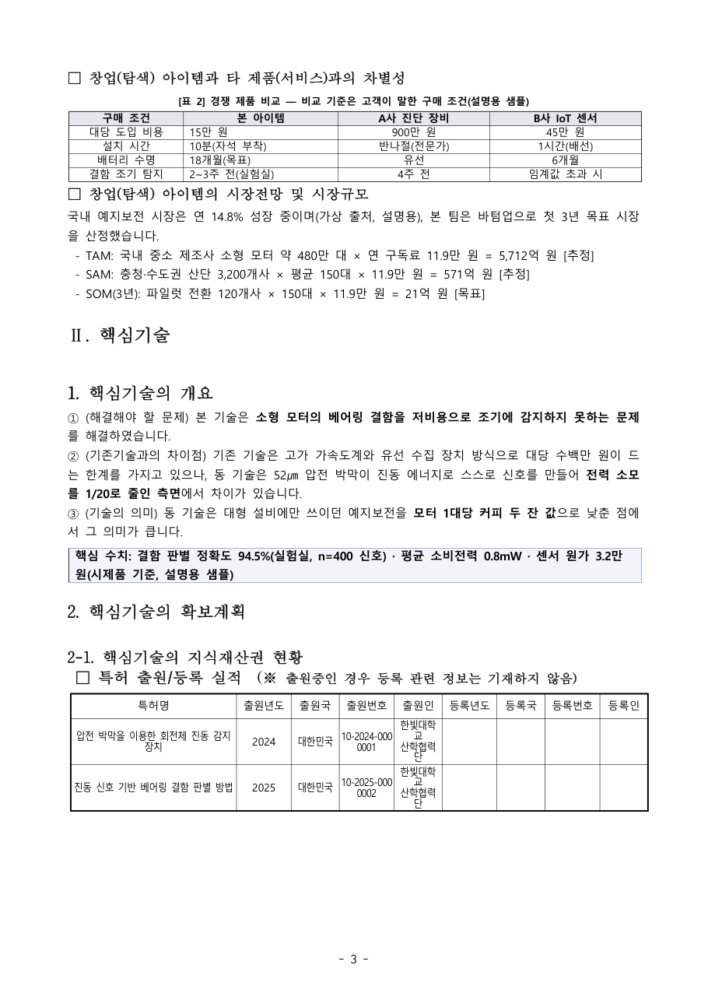
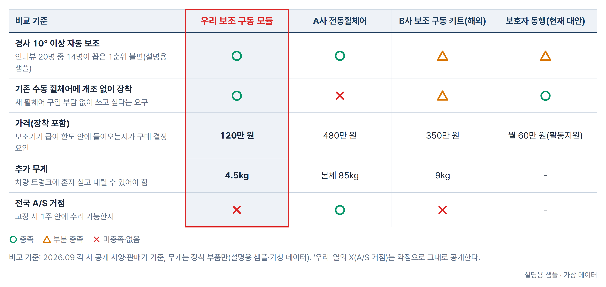
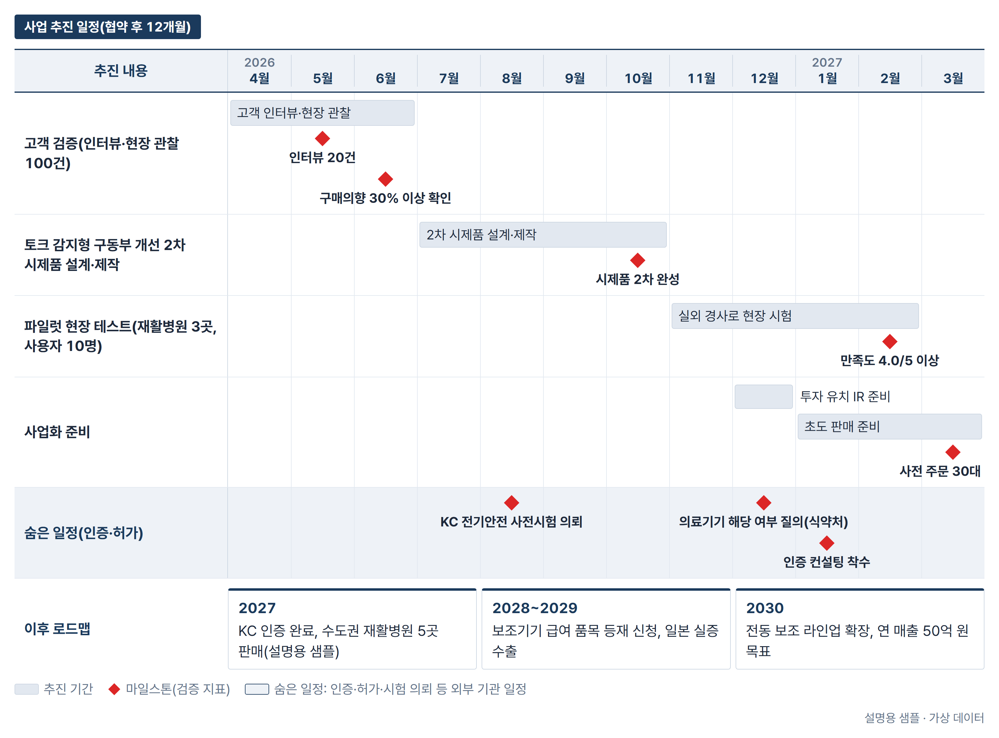

1. 무엇이 나오나요?
실행이 끝나면 출력 폴더 안 10_final/에 다섯 가지가 만들어집니다. 모두 여러분 컴퓨터에만 저장됩니다.
① 사업신청서 hwp · hwpx
{팀명}_사업신청서.hwp — 공고에 첨부된 공식 양식 그대로, 표지 포함 10쪽 이내. 한글에서 바로 열어 고칠 수 있습니다. 표지 체크박스·고정 표(특허·권리관계·TRL·팀 구성·경력)까지 채워집니다.
② 확인용 PDF
쪽수와 그림 배치를 확인하는 용도입니다. 제출은 공고가 정한 형식(hwp 등)을 따르세요.
③ 심사대비_패키지.md
실제 평가표(5항목 100점 + 해외형 P/F)로 매긴 셀프 채점표, 예상 의견서, 예상 질의 15개와 답 뼈대, 제출 전 확보 필요 목록, 제출 체크리스트, 5분 발표영상 대본 뼈대.
④ 팀_확인사항.md
팀만 아는 값(인적사항·특허번호·인터뷰 수·자격 요건)이 비어 있는 자리를 쪽·칸 단위로 짚어 둔 표입니다. EL이 제출 전에 마지막으로 읽고 채우는 문서입니다.
⑤ 검수용 PNG
10_final/qa_png/에 쪽별 그림을 저장합니다. 한글을 열지 않고도 결론 박스·그림·표가 제자리에 있는지 바로 봅니다.
예시 — 교육용 가상 팀 「진동지기」
아래는 교육용 가상 팀 자료로 만든 예시입니다. 실제 팀이 아니며 숫자도 모두 예시입니다.




작업 과정 파일(추출 텍스트, 사실 팩, 팀 질문지, 목차, 초안 v1/v2, 모의심사 결과, 근거 원장, 도식 PNG, 주입 사양)도 같은 출력 폴더에 번호 순서대로 남습니다. 어떤 숫자가 어디서 왔는지 되짚어 볼 수 있습니다.
2. 준비물 — 처음 한 번만
| 항목 | 필수 | 왜 필요한가요 | 어디서 받나요 |
|---|---|---|---|
| Claude Code | 필수 | 플러그인을 실행하는 프로그램입니다. | claude.com/claude-code |
| Python 3.10 이상 | 필수 | hwp·PDF·PPTX에서 글자와 사진을 뽑고, 숫자를 검증하고, 도식을 만듭니다. | python.org (설치할 때 Add Python to PATH 체크) |
| Chrome 또는 Edge | 필수 | 증거 도식 12종을 그리고(헤드리스), 근거 기사·통계 페이지를 캡처합니다. | 이미 설치돼 있다면 그대로 쓰면 됩니다. |
| Windows + 한글(HWP) | 5단계 필수 | 공식 hwp 양식에 본문·표·그림을 한글이 직접 넣습니다(COM 자동화). 양식을 다른 형식으로 바꾸지 않기 때문에 제출본이 원본 양식 그대로입니다. | 한글 2018 이상 권장. Mac은 도식 렌더까지 진행하고 주입 사양 파일을 남기므로, 마지막 주입만 Windows 컴퓨터에서 이어 하면 됩니다(FAQ 참고). |
| Pretendard 폰트 | 선택 | 생성 도식의 글꼴입니다. 없으면 맑은 고딕으로 대체됩니다. 신청서 본문 글꼴은 양식이 정한 대로입니다. | github.com/orioncactus/pretendard |
Windows — Python 패키지 설치
py -m pip install python-pptx pymupdf pillow olefile python-docx openpyxl jsonschema lxml pywin32Mac — Python 패키지 설치
python3 -m pip install python-pptx pymupdf pillow olefile python-docx openpyxl jsonschema lxml설치가 끝났는지 확인하려면 아래 한 줄을 실행해 보세요. 아무 메시지 없이 끝나면 정상입니다.
python -c "import pptx, fitz, PIL, olefile, docx, openpyxl, jsonschema, lxml"Node나 npm은 필요 없습니다. 유료 API 키도 따로 필요하지 않습니다. 특허 조회(KIPRIS)·시장 통계 조사는 공개 웹페이지를 읽는 방식이라 별도 계정이 없어도 됩니다.
3. 설치 — 두 줄이면 끝
Claude Code를 켜고 아래 두 줄을 차례로 입력하세요.
/plugin marketplace add aqualife75/jsbiz-texcore-plan
/plugin install texcore-plan@jsbiz-texcore-plan설치가 끝나면 Claude Code를 새 세션으로 다시 시작하세요. 새 세션에서 /texcore-plan을 입력했을 때 자동완성 목록에 뜨면 성공입니다.
업데이트
양식이나 기능이 바뀌면 아래 한 줄로 최신본을 받습니다.
/plugin marketplace update jsbiz-texcore-plan3-1. Codex를 쓰신다면 — 작업 폴더 ZIP
Claude Code 대신 OpenAI Codex를 쓰는 분은 플러그인 설치 대신 작업 폴더 ZIP을 씁니다. 같은 하네스가 들어 있고 사용 흐름은 세 단계입니다.
① 내려받아 압축 풀기
Releases에서 정석biz-TexCore-Plan-v0.1.0.zip을 받아 모두 압축 해제하면 정석biz-텍스코어-프로젝트 폴더가 생깁니다. Dropbox·OneDrive 동기화 폴더보다 바탕화면·문서 같은 로컬 폴더가 안전합니다.
② Codex에서 그 폴더 열기
압축을 푼 폴더를 Codex 프로젝트로 엽니다. 폴더 안의 안내(AGENTS.md)를 읽고 Codex가 실행 환경을 스스로 준비합니다. Python 패키지는 프로젝트 안 .venv에만 설치됩니다.
③ 자료 넣고 한 문장
자료넣는곳에 팀 자료를 넣고 "우리 팀 텍스코어 신청서 만들어줘"라고 보냅니다. 결과는 결과물/결과보기.html에서 봅니다. 한글 양식 주입은 Windows + 한글(HWP)에서만 되며, Mac에서는 본문 초안·도식·주입 사양까지 만든 뒤 Windows에서 "이어서 해줘"로 마칩니다.
ZIP 안의 사용설명서.html에 그림과 함께 보는 안내가 있습니다(인터넷 없이 열림). 플러그인 버전과 결과물·원리는 같습니다.
4. 자료 폴더 만드는 법
폴더 하나를 만들고 팀 자료를 전부 넣으면 됩니다. 하위 폴더로 나눠도 괜찮습니다. 많을수록 빈칸이 줄어듭니다.
| 넣으면 좋은 자료 | 확장자 | 신청서의 어디에 쓰이나요 |
|---|---|---|
| IR 덱 · 발표자료 | pptx · pdf | 아이템 컨셉, 차별성, 시장, 팀 — 신청서 전체의 뼈대. 도식·사진을 그대로 재활용합니다. |
| 사업계획서 · 연구과제 계획서 · 지난 지원사업 신청서 | hwp · hwpx · docx · pdf | 핵심기술 설명, 시제품 계획, 추진 일정의 근거입니다. |
| 특허 출원서 · 등록증 · 명세서 첫 장 | pdf · hwp | Ⅱ-2 특허 표(출원번호·출원인)와 권리관계 표. 번호가 있어야 KIPRIS 확인이 됩니다. |
| 논문 · 시험성적서 · 실험 데이터 | pdf · xlsx | 핵심기술의 정량 성능(정확도·시간·비용)과 TRL 근거입니다. |
| 시제품 · 실험 · 현장 사진 | png · jpg | 증거 그림으로 들어갑니다. 가공하지 않고 캡션·출처를 붙입니다. |
| 고객 인터뷰 정리 · 설문 · LOI | docx · xlsx · pdf | 목표 고객 표(1차·2차 고객)와 사업화 계획의 가장 강한 증거입니다. |
| 팀원 이력 · 연구실 소개 | docx · pdf | Ⅳ 팀 구성 표와 경력 표. EL·PM·PI 역할 구분에 필요합니다. |
폴더 예시
우리팀_자료/
├─ 진동지기_IR덱_2026.pptx
├─ 진동지기_연구과제계획서.hwp
├─ 특허/
│ ├─ 출원서_10-2024-0000001.pdf
│ └─ 출원서_10-2025-0000002.pdf
├─ 고객인터뷰_32명_정리.docx
├─ 시험성적서_진동판별.pdf
└─ 사진/
├─ 시제품_1차.jpg
└─ 현장_설치.jpg세 가지만 지켜 주세요
파일명에 팀명
파일 이름 앞에 팀명을 붙이면 팀명을 자동으로 인식합니다. 인식이 안 되면 실행할 때 --team 진동지기로 알려 주면 됩니다.
없는 자료는 없는 대로
1단계가 끝나면 자료에 없는 것을 묻는 팀 질문지가 만들어집니다. 답을 폴더에 넣고 이어 가거나, 일단 계속 만들고 나중에 채워도 됩니다. 빈칸을 상상으로 채우지 않습니다.
암호가 걸린 파일은 빼기
열 때 비밀번호를 묻는 파일은 읽지 못합니다. 비밀번호를 푼 사본을 넣거나 폴더에서 빼 주세요.
5. 실행 — 한 문장
Claude Code에서 자료 폴더 경로와 교육유형을 넣어 한 줄만 입력하면 됩니다.
/texcore-plan "C:\Users\나\Desktop\우리팀_자료" --type 해외"이 폴더 자료로 텍스코어 신청서 만들어줘"처럼 말로 부탁해도 됩니다. 교육유형을 빼면 자료에서 찾고, 없으면 1단계 뒤에 한 번 묻습니다(해외교육형이 기본이며 영문 요약과 미국 시장 P/F 대비가 추가됩니다).
자주 쓰는 옵션
| 옵션 | 언제 쓰나요 |
|---|---|
--team 진동지기 | 팀명이 자동으로 인식되지 않을 때 직접 지정합니다. |
--type 해외 / --type 국내 | 해외교육형·국내교육형. 국내형이면 영문 요약 섹션을 양식에서 지웁니다. |
--out "D:\결과" | 결과 폴더를 자료 폴더 옆이 아닌 다른 곳에 만들고 싶을 때 씁니다. |
--resume | 중간에 멈췄을 때 끝난 단계를 건너뛰고 이어서 진행합니다. |
--from 4 | 4단계(근거 조사)부터 다시 실행합니다. 팀 답변이나 자료를 보강한 뒤에 씁니다. |
--accept-risk | 조사로도 못 채운 치명적 빈칸이 남아도 [확보 필요]로 두고 끝까지 만듭니다. |
--yes | 중간 확인 세 번을 건너뛰고 끝까지 자동으로 진행합니다. |
진행 중 세 번 물어봅니다
① 팀 질문지
1단계가 끝나면 자료에 없는 것(PM·PI 인적사항, 특허번호, 인터뷰 수, 자격 요건 등)을 물은 02_team_questions.md를 보여 줍니다. "팀에게 보내고 기다린다" 또는 "지금 아는 것으로 계속"을 고릅니다.
② 칸별 목차 표
양식의 칸마다 배점·심사위원의 질문·결론 한 문장·증거 계획을 표로 보여 줍니다. 결론이 마음에 안 들면 그 자리에서 말로 고치면 됩니다. 예: "Ⅰ-2 컨셉 결론을 '설치 10분'이 아니라 '고장 2~3주 전 경보'로 바꿔 주세요."
③ 남은 critical 승인
모의심사가 치명적이라고 본 지적 중 조사로도 못 푼 것이 남으면 목록을 보여 주고 묻습니다. "계속"이면 [확보 필요]로 남긴 채 신청서를 만들고, "중단"이면 확보 목록만 정리하고 멈춥니다.
6단계, 2시간 안팎
| 단계 | 담당 | 하는 일 | 남기는 것 |
|---|---|---|---|
| 1. 자료 판독 | tp-intake | hwp·PDF·PPTX·사진에서 글자와 이미지를 뽑아 양식 13슬롯 사실 팩으로 정리하고, 없는 것은 팀 질문지로 만듭니다. | 02_fact_pack.json · 02_team_questions.md |
| 2. 본문 작성 | tp-writer | 칸별 목차(결론 한 문장·배점·쪽 예산)를 짜고, 결론 박스 → 소제목 → 증거 그림 → 짧은 문단 순서로 씁니다. 문장은 80자 이내, 금지 표현은 자동으로 걸러집니다. | 03_outline.json · 04_draft_v1.json |
| 3. 모의심사 | tp-panel | 숫자를 검산하고 VC·TLO(기술이전)·도메인 전문가·I-Corps 인스트럭터·비전문가 5인이 실제 평가표(아이템 20·핵심기술 15·사업화 25·팀 20·참여의지 20)로 채점합니다. | 05_review/summary.json |
| 4. 근거 조사 | tp-researcher | 약한 칸만 골라 KIPRIS 특허·시장 통계·인증 요건·경쟁사 공식 사양을 조사해 캡처하고 본문을 개정합니다. | 06_evidence/ · 07_draft_v2.json |
| 5. 도식 + 주입 | tp-designer | 증거 도식(경쟁표·TAM/SAM/SOM·TRL·일정·비용·팀·근거 카드 등 12종)을 그리고, 한글 양식에 넣은 뒤 쪽별 PNG로 10쪽 안에 들어왔는지 검수합니다. | 08_figures/ · 09_build/ |
| 6. 심사 대비 | tp-finalizer | 셀프 채점·예상 질의·확보 필요 목록·제출 체크리스트·팀 확인사항을 정리해 최종본을 냅니다. | 10_final/ |
중간에 창을 닫아도 진행 상황은 state.json에 남습니다. 같은 명령에 --resume만 붙이면 이어서 진행합니다. 실제 팀 자료는 첫 빌드가 12~14쪽으로 나와 본문을 한 번 줄이는 것이 보통입니다. 그것도 자동으로 합니다.
6. 결과 확인 — 이 3가지만
파일이 많아 보여도 사람이 직접 볼 것은 세 가지뿐입니다. 순서대로 보세요.
① 팀_확인사항.md — 가장 먼저
자료에 없어서 비워 둔 자리([확보 필요])가 쪽·칸 단위로 정리돼 있습니다. 자격 요건(EL의 재지원 가능 여부, 예비창업자 요건 등)은 맨 위에 올라옵니다. 여기 적힌 항목은 팀이 직접 확인하고 채워야 합니다. 답을 02_team_answers.md로 적어 자료 폴더에 넣고 --from 4로 다시 돌리면 반영됩니다.
② 10_final/qa_png/ — 쪽별 그림
표지 체크박스가 제대로 찍혔는지, 칸마다 결론 박스가 있는지, 그림이 잘리거나 표가 쪽 사이에서 끊기지 않았는지, 10쪽 안에 들어왔는지만 보면 됩니다. 이상한 쪽이 있으면 쪽 번호를 말해 주면 고쳐 줍니다.
③ 심사대비_패키지.md — 셀프 채점과 예상 질의
5인 모의심사 점수(항목별·합계)와 선정 목표선 80점 대비 부족한 항목, 예상 질의 15개와 답 뼈대가 있습니다. 점수가 낮은 항목의 '85점 처방'부터 보강하고, 질의는 5분 발표영상과 비대면 질의응답 준비에 그대로 씁니다.
숫자가 어디서 왔는지 궁금하면 05_review/trace_report.json을 여세요. 본문과 그림의 모든 숫자가 사실 팩의 어느 파일, 또는 근거 원장의 어느 출처에서 왔는지 적혀 있습니다.
7. 수정 요청은 대화로
한글에서 직접 고쳐도 되지만, 말로 부탁하면 모의심사·숫자 추적까지 다시 맞춰 줍니다. 어느 칸의 무엇이 어떻게 보이는지만 말하면 됩니다.
| 이런 상황이면 | 이렇게 말합니다 |
|---|---|
| 결론이 약하다 | "Ⅰ-2 컨셉 결론 박스가 기능 설명입니다. 고객이 얻는 결과(고장 2~3주 전 경보)로 바꿔 주세요." |
| 그림이 작다 | "3쪽 경쟁 비교 도식 글자가 작습니다. 폭을 150mm로 키우고 비교 기준을 4개로 줄여 주세요." |
| 어려운 말이 있다 | "Ⅱ-1 두 번째 문장의 전문용어를 비전문가 심사위원이 읽을 수 있게 풀어 주세요. 숫자는 그대로요." |
| 쪽수가 넘친다 | "11쪽입니다. Ⅲ-1 시제품 칸에서 그림과 겹치는 불릿을 빼고 10쪽에 맞춰 주세요." |
| 표가 쪽 사이에서 끊긴다 | "6쪽 아래가 비고 Ⅳ-2 경력 표가 7쪽으로 통째로 넘어갔습니다. 경력 셀을 4줄 이하로 줄여 주세요." |
| 점수를 올리고 싶다 | "사업화 계획이 25점 만점에 16점입니다. 85점 처방에 적힌 보완 세 가지를 Ⅲ-1·Ⅲ-2에 반영해 주세요." |
| 숫자 대조표 | "신청서의 모든 숫자를 쪽·칸·숫자·출처 순서의 표로 만들어 주세요. 원본 자료와 하나씩 대조하겠습니다." |
팀 답변을 받은 뒤
팀 질문지·팀 확인사항의 답(인적사항, 특허번호, 인터뷰 수, LOI 등)을 02_team_answers.md로 적어 자료 폴더에 넣고 아래 명령으로 4단계부터 다시 돌리세요. 조사·개정·주입·심사 대비 패키지를 다시 만들고 모의심사도 다시 채점합니다.
/texcore-plan "C:\Users\나\Desktop\우리팀_자료" --from 4도식과 주입만 다시 하고 싶으면 --from 5, 심사 대비 패키지만 다시 뽑고 싶으면 --from 6을 쓰면 됩니다.
8. 원리 — 심사위원이 짧은 시간에 판단하게
심사위원은 한 팀의 신청서와 5분 영상을 짧은 시간 안에 보고 다섯 항목에 점수를 줍니다. 이 플러그인은 그 다섯 항목의 질문에 칸마다 먼저 답하고, 답을 그림으로 증명하는 구조로 신청서를 씁니다.
실제 평가표 그대로 채점합니다
| 평가항목 | 배점 | 심사위원의 속마음 질문 | 신청서의 어느 칸 |
|---|---|---|---|
| 창업탐색 아이템 | 20 | 누구의 무슨 문제를 푸는가? 기존 제품과 무엇이 다른가? 시장은 있는가? | Ⅰ-2 컨셉·목표 고객·차별성·시장 |
| 창업탐색 핵심기술 | 15 | 기술이 정말 우수한가? 특허는 누구 것인가? 지금 어디까지 됐나(TRL)? | Ⅱ-1 개요 · Ⅱ-2 특허·권리관계·TRL |
| 사업화 계획 | 25 | 무엇을 만들어 누구에게 어떻게 검증할 건가? 일정이 현실적인가? | Ⅲ-1 시제품 · Ⅲ-2 일정 · Ⅲ-3 애로 |
| 창업탐색팀 | 20 | 이 팀이 할 수 있나? EL·PM·PI 역할이 분명한가? | Ⅳ 팀 구성·경력 |
| 참여의지 · 프로그램 이해도 | 20 | 텍스코어가 뭘 하는 프로그램인지 알고 지원했나? 교육에 나올 사람인가? | Ⅰ-1 추진 동기와 목표 |
| 영어활용능력 · 해외시장 적합도 | P/F | (해외교육형) 미국 잠재고객을 영어로 인터뷰할 수 있나? 미국 시장을 아는가? | 영문 요약 · Ⅰ-2 시장 |
칸 하나의 해부학
① 결론 박스
칸 첫머리에 그 칸의 답을 한 문장으로 적습니다. "현장 인터뷰 32건에서 확인한 문제를 6개월 안에 유료 파일럿 3곳으로 검증합니다"처럼 숫자가 들어간 문장입니다. 바쁜 심사위원은 이것만 읽어도 됩니다.
② 소제목
양식의 □ 소항목을 그대로 씁니다. 심사위원이 평가표 항목과 1:1로 대조할 수 있습니다.
③ 증거 그림 · 표
주장 바로 아래에 시제품 사진, 측정 결과, 경쟁 비교표, 인터뷰 근거 카드를 둡니다. 그림마다 캡션 · "→ 증명: 무엇을" · 출처 세 줄이 붙고, 섹션별 최소 그림 수가 지켜지지 않으면 다음 단계로 못 넘어갑니다.
④ 짧은 문단
문장은 80자 이내, 한 문단은 한 가지 주장. "세계 최고", "혁신적인", "지속적인 고도화" 같은 말은 금지어로 걸러집니다. 전문용어는 비전문가 심사위원이 읽을 수 있게 풀어 씁니다.
핵심기술은 세 문장 공식
Ⅱ-1 핵심기술 개요는 ① 해결해야 할 문제 → ② 기존 기술과의 차이점 → ③ 기술의 의미, 세 문장으로 씁니다. 그 아래 핵심 수치(정확도·시간·비용)를 박스로 따로 보여 줍니다. 이 순서가 "기술이 우수한가"라는 질문에 가장 빨리 답하는 순서입니다.
없는 숫자는 만들지 않는다 → trace
이 하네스의 가장 중요한 원칙입니다. 신청서에 등장하는 모든 숫자는 사실 팩(팀이 준 자료) 또는 증거 원장(조사로 찾은 공식 출처) 중 한 곳에 실제로 있어야 합니다. trace 검사가 본문과 그림의 숫자를 하나씩 원본과 대조해서, 근거 없는 숫자가 한 건이라도 있으면 그 단계를 통과시키지 않습니다. 그래서 시장 규모나 인터뷰 수를 그럴듯하게 지어내는 일이 구조적으로 막혀 있고, 자료에 없는 자리는 [기입 필요](팀만 아는 값) 또는 [확보 필요](조사로도 못 찾은 값)로 남아 팀 확인사항에 모입니다. 그 목록을 채우는 것이 팀의 몫이고, 그 과정이 곧 심사 질의 준비입니다.
5인 모의심사 + 검산
초안이 나오면 VC(투자 관점), TLO(기술이전·특허 권리관계), 도메인 전문가(기술 실현성·경쟁사), I-Corps 인스트럭터(고객개발·검증 계획), 비전문가(읽히는가)가 각자 실제 평가표로 채점하고 공격 질문을 던집니다. 검산 담당은 단위·산식·앞뒤 숫자 충돌(예: 판매가와 제작비가 뒤집힘)을 잡습니다. 의장이 병합해 항목별 점수·치명적 지적·85점 처방을 냅니다. 점수는 후하게 주지 않습니다.
9. 자주 묻는 질문
Mac에서도 되나요?
1~4단계(판독·본문·모의심사·조사)와 5단계의 도식 렌더까지는 Mac에서 됩니다. 마지막 한글 양식 주입은 Windows + 한글(HWP)이 필요합니다. Mac에서 돌리면 주입 사양 08_fill_spec.json까지 남기므로, 출력 폴더를 Windows 컴퓨터로 옮겨 "--from 5로 이어서"라고 하면 됩니다.
한글(HWP)이 없으면?
본문·그림·표의 내용은 전부 만들어지지만 공식 양식에 자동으로 들어가지는 않습니다. 한글이 있는 컴퓨터에서 5단계를 이어 하거나, 초안 JSON과 도식 PNG를 보면서 직접 양식에 옮겨야 합니다. 학교·연구실 PC 대부분에 한글이 있으니 그쪽에서 마지막 단계만 돌리는 것을 권합니다.
hwp 파일을 못 읽는다고 나옵니다
구형 hwp 중 일부(암호 설정·배포용 문서)는 글자 추출이 안 됩니다. 한글에서 해당 파일을 열고 다른 이름으로 저장 → PDF 또는 hwpx로 저장해 같은 폴더에 넣은 뒤 --resume으로 다시 실행하세요.
국내교육형인데요
--type 국내로 실행하면 영문 요약 섹션을 양식에서 지우고, 미국 시장 P/F 대비 항목도 빠집니다. 나머지 다섯 항목은 같습니다.
시간과 비용이 얼마나 드나요?
실제 팀 자료(IR 덱 40쪽 + 신청서) 기준 2시간 안팎, 에이전트 호출 20회 정도입니다. 플러그인 자체는 무료이고 별도 API 결제도 없습니다. Claude Code 사용량만 소모됩니다.
우리 팀 자료가 외부로 나가지 않나요?
추출된 글자, 사진, 사실 팩, 신청서 파일은 모두 여러분 컴퓨터의 출력 폴더에만 저장됩니다. 다른 서버로 업로드하지 않습니다. 4단계에서 KIPRIS·통계·경쟁사 공개 페이지를 읽을 때만 인터넷을 쓰고, 이때도 팀 자료의 문장을 검색어로 보내지 않고 조사 주제(특허번호, 통계 항목명)만 다룹니다.
예비창업패키지 같은 다른 지원사업에도 쓸 수 있나요?
이 플러그인은 텍스코어 실험실창업탐색팀 공식 양식 전용입니다. 칸 구조·배점·고정 표가 그 양식에 맞춰져 있습니다. 다른 사업의 사업계획서는 별도 도구를 쓰세요.
공고가 바뀌면요?
양식이나 배점이 바뀌면 플러그인을 업데이트해야 합니다(/plugin marketplace update jsbiz-texcore-plan). 현재는 2026년 공고 양식 기준이며, 제출 전에 반드시 그해 공고의 양식·제출 형식·마감일을 직접 확인하세요.
10. 꼭 알아두세요
초안입니다. 마지막 입력은 팀이 합니다
이 플러그인은 신청서를 대신 써 주는 대필 도구가 아니라 구조와 증거를 갖춘 초안을 만드는 도구입니다. 심사위원 앞에서 답하는 사람은 EL이고, 신청서의 모든 문장에 대한 책임도 팀에게 있습니다. 제출 전에 처음부터 끝까지 소리 내어 읽어 보세요.
자격 요건은 직접 확인하세요
EL의 재지원 가능 여부, 예비창업자 요건, PM·PI 자격, 교육 참여 가능 일정은 그해 신청 안내서가 기준입니다. 하네스는 자료에서 위험 신호를 잡아 팀 확인사항 맨 위에 올리지만, 판정은 하지 않습니다.
모든 숫자와 출처는 직접 검증하세요
하네스는 숫자의 출처를 추적해 기록하지만, 그 출처가 최신인지·해석이 맞는지까지 보장하지는 않습니다. 시장 규모, 경쟁사 가격, 특허 권리자, 통계 연도는 원문을 열어 한 번씩 확인하세요. 특히 인터뷰 수·LOI·실험 결과는 팀만이 정확히 압니다.
이미지 라이선스
조사 과정에서 가져온 이미지는 팀 확인사항에 라이선스 상태와 함께 정리됩니다. 확인되지 않은 이미지는 빼거나 직접 찍은 사진·직접 만든 도식으로 바꾸세요.
모의심사 점수는 참고치입니다
공개판의 모의심사 기준은 일반화된 체크리스트입니다. 실제 심사 데이터는 포함하지 않으며, 모의심사 점수가 실제 선정을 예측하지 않습니다.
교육용 예시는 가상입니다
이 문서와 저장소의 예시 팀 「진동지기」는 교육용 가상 팀입니다. 실제 팀이 아니며 모든 수치는 예시입니다. 어떤 형태로든 실제 자료로 인용하지 마세요.